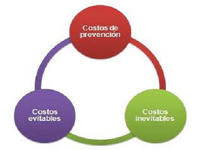

Pronóstico
Es el proceso de estimación en situaciones de incertidumbre. El término predicción es similar, pero más general, y usualmente se refiere a la estimación de series temporales o datos instantáneos.

Diagrama ABC
Es un método de clasificación frecuentemente utilizado en gestión de inventario. Resulta del principio de Pareto. El análisis ABC permite identificar los artículos que tienen un impacto importante en un valor global (de inventario, de venta, de costes...).

Elementos y división del costo
La contabilidad de costos en empresas se enfoca principalmente en lavaluación de inventarios de productos en procesos y de producción terminados.Para ello es necesario determinar los elementos delcosto de producción incurridos en el procesoproductivo.